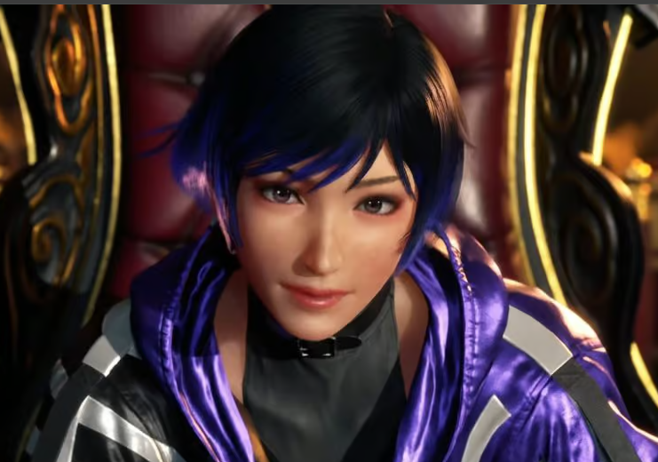

Reina Mishima

Summary
I bring a unique blend of technical expertise and strategic vision to drive organizational success. My leadership focuses on seamlessly integrating technological advancements with strategic business goals while fostering a dynamic work environment through employee development and diversity initiatives. Implementing comprehensive fiscal strategies ensures sustainable performance and enhances shareholder value. Actively engaging in client relations and industry events, I consistently represent the company, highlighting our values and contributions in the broader technology sector.
Education
- Mishima Polytechnical Highschool (2010-2014)
- Bachelor of Science in Information Technology - Mishima Polytechnical College (2014-2018)
Work Experience
Skills
- Strategic Visioning: ⭐️⭐️⭐️⭐️⭐️
- Project Leadership and Execution: ⭐️⭐️⭐️⭐️⭐️
- Technology Acumen: ⭐️⭐️⭐️⭐️⭐️
- Collaboration and Team Integration: ⭐️⭐️⭐️⭐️⭐️
- Market Awareness and Innovation: ⭐️⭐️⭐️⭐️⭐️
- Customer-Centric Leadership: ⭐️⭐️⭐️⭐️⭐️
Awards and Certifications
- Programming Proficiency Certificate - Mishima Polytechnical College (2014) - Outstanding Achievement
- WebTech Pinnacle Award - ByteSphere University (2014) - Unparalleled Excellence
- Algorithmic Maestro - NihonCode Studios (2014) - Unmatched Skill
- TechTrailblazer Award - Tokyo Nexus Technologies (2015) - Supreme Leadership
- Mobile App Innovator Certification - AppGenius Labs (2015) - Exceptional Innovation
- CodeForge Catalyst - OsakaCodeForge Innovations (2016) - Unrivaled Contribution
- DataCraft Mastery Award - Mishima Polytechnical College (2016) - Top-tier Mastery
- InnovateTech Hackathon Champion - Kyoto InnovateTech Labs (2017) - Peerless Performance
- ArchiTech Visionary Certification - OsakaArchiTech Innovations (2017) - Visionary Excellence
- SecureIT Summit Cyber Guardian - CyberGuard Solutions Japan (2017) - Unbeatable Cybersecurity
- Outstanding On Job Training Performance Award - SakuraInnovate Solutions (2017) - Unsurpassed Performance
- PolyCode Mastery Certification - Mishima Polytechnical College (2018) - Mastery Beyond Compare
- FutureTech IT Luminary - FutureTech Visionary Institute Japan (2018) - Luminary Leadership
- Thesis Excellence Award - Mishima Innovate Institute (2018) - Unprecedented Thesis Excellence
- Summa Cum Laude Academic Excellence Award - Mishima Polytechnical College (2018) - Academic Brilliance
- Mobile App Innovation Award (2019) - Innovation Mastery
- Cross-Functional Collaboration Excellence Certificate (2019) - Peerless Collaboration
- Industry Trendsetter Certification (2019) - Trendsetting Excellence
- User Experience Enhancement Award (2019) - Supreme User Experience
- Technical Support Excellence Certification (2019) - Unmatched Technical Support
- Strategic Visionary Leadership Award (2020) - Visionary Leadership Mastery
- Innovative Project Execution Certificate (2020) - Innovative Project Mastery
- Customer-Centric Culture Champion (2020) - Champion of Customer-Centric Culture
- Forward-Thinking Leadership Distinction (2021) - Forward-Thinking Leadership Mastery
- Competitive Edge Innovator Award (2021) - Unmatched Competitive Edge
- Digital Transformation Pioneer Award (2022) - Pioneer of Digital Transformation
- Cybersecurity Leadership Certification (2022) - Cybersecurity Leadership Mastery
- Innovation in AI Applications Award (2022) - Innovation Mastery in AI Applications
- Cloud Architecture Excellence Certificate (2023) - Cloud Architecture Excellence
- Global IT Leadership Award (2023) - Global IT Leadership Mastery
- Strategic Vision Continuity Award (2023) - Mastery in Strategic Vision Continuity
- Winner of The King of Iron Fist Tournament 8 (2024) - Champion
Languages
- Japanese
- Chinese
- Cantonese
- German
- English
- French
- Filipino
- Indonesian
Other